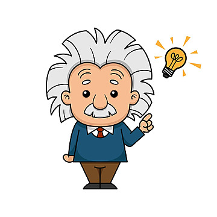
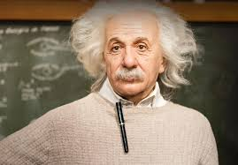
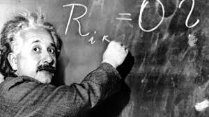
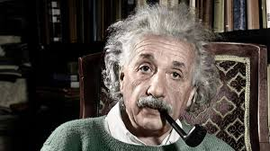
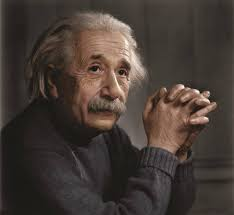
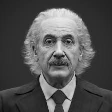
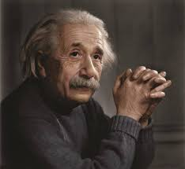
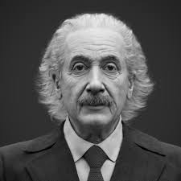

Albert Einstein
Achievements
- General relativity
- Bose-einstein statistics
- Brownian motion
- Photoelectric effect
- Quantum theory of light
- Grand unified theory
- Wave - particle duality
- Avogadro's number
- Black holes
 Existence of light quanta
In 1909, I showed that the photon carries momentum as well as energy and that electromagnetic radiation must have both particle-like and wave-like properties if Planck's law of blackbody radiation holds; this was a forerunner of the principle of wave–particle duality. I have received the 1921 Nobel Prize in Physics for this investigation of light quanta.
Determination of molecular dimensions
In 1905, I have decided to tackle the problem of determination of molecular dimensions using hydrodynamics. I was the first one to successfully solve this problem using liquids. I obtained a respectable estimate for the Avogadro constant, after incorporating better experimental data. This doctoral dissertation remains one of my most cited papers ever, with applications in various engineering disciplines, such as concrete mixing and dairy production.
Brownian motion
In 1905, I have submitted a theory of Brownian motion, named after botanist Robert Brown, in terms of fluctuations in the number of molecular collisions with an object, providing further evidence that matter was composed of atoms. I showed that the distance a grain of pollen suspended in a liquid traveled from its starting point was proportional to the square root of the time elapsed and determined Avogadro's number in a new way.
Special theory of relativity
In 1905, I developed this special theory of relativity, which reconciled the Galilean relativity of motion with the observed constancy of the speed of light. Its counterintuitive predictions that moving clocks run more slowly,that moving objects are shortened in their direction of motion, and that the order of events is not absolute have been confirmed experimentally. With special relativity, I rendered the notion of the luminiferous ether obsolete.
E = mc^2
In 1905, I concluded that "The mass of a body is a measure of its energy content." In the form of equation, E = mc^2, where E is of an object, m is the mass of that object, and c is the speed of light in vacuum. I suggested that "bodies whose energy contents is variable to a high degree, e.g. salts of radium" be used to test my new equation.
Quantum theory of specific heats
In 1907 and again in 1911, I have developed the first quantum theory of specific heats of a solid by generalizing Planck's relation. This theory resolved a paradox of 19th-century physics that specific heats were often smaller than could be explained by any classical theory. My work was also the first to show that Planck's relation, E=hν, was a fundamental law of physics, and not merely special to blackbody radiation.
General theory of relativity
Between 1907 and 1916, I have developed the general theory of relativity, a classical field theory of gravitation that provides the cornerstone for modern astrophysics and cosmology. General relativity makes a number of surprising predictions, such as the bending of light by gravity, that matter affects the flow of time, the stretching or redshift of light due to gravity, and frame dragging.
Einstein - Brillouin - Keller method
In 1917, I presented the semi-classical Einstein - Brillouin - Keller method for computing the eigenvalues of a quantum-mechanical system. An improvement of the Bohr- Sommerfeld quantization condition, it allows for the solution of a variety of problems. The Bohr model of the hydrogen atom is a simple example, but the EBK method also gives accurate predictions for more complicated systems, such as the dinuclear cations
Image Gallery
   


